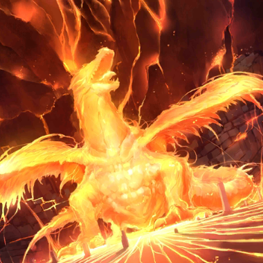
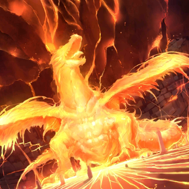

- 8/19
- 臨時維修公告（8/22 13:00實施）
非常感謝您的使用。
這裡是「Fate/Grand Order」營運團隊。
將於下記的期間實施「Fate/Grand Order」的臨時維修。
維修中無法遊玩「Fate/Grand Order」。
在維修開始前，請結束關卡及戰鬥。
※若任務及戰鬥進行中開始維修，或不正常結束的話，可能會有無法領取報酬的情況。
維修後由於更新檔案的下載等通信量增加，可能會有短時間覺得遊戲動作變慢的情況。
在維修結束後，請試著檔案的全部下載(一括ダウンロード)。
另外推薦在可連接Wi-Fi的環境中下載。
■時間
2016年8月22日(一)13:00～16:00（預定）
※維修結束的預定時間可能會有前後差異。
▼遊戲的更新
1.新活動「夏日！ 大海！ 開拓！ FGO 2016 Summer」第二部的實施
2.聖晶石召喚(期間限定)「夏日！ 大海！ 開拓！ FGO 2016 Summer Pick Up召喚2」的實施
3.新Servant及新概念禮裝的追加
4.一部份概念禮裝的背景描述文字更新
※對象概念禮裝如下。
・
 

5.一部份Servant的語音音量調整
※對象Servant如下。
・
6.一部份Servant的戰鬥角色圖像更新
※對象Servant如下。
・
▼問題的修正
1.一部份Servant的戰鬥角色圖像問題修正
※對象Servant如下。
・


2.一部份Servant的寶具演出時的圖像問題修正
※對象Servant如下。
・

3.一部份Servant的寶具演出時，戰鬥角色顯示雜亂的問題修正
※對象的Servant如下。
・
4.一部份文字的錯字漏字修正
▼遊戲的修改
・一部份Servant的技能使用時動作修改
※對象的Servant如下。
・
對上述的問題修正感到抱歉，會向對象的玩家做出以下對應。
【對象】
於8/22(一) 12:59前有遊玩過「Fate/Grand Order」的所有玩家
【對應內容】
・聖晶石3個
【配布方法】
在禮物箱配布
【配布期間】
2016年8月23日(二)AM3:00～2017年1月31日(二)22:59
非常抱歉麻煩到正在使用的玩家。